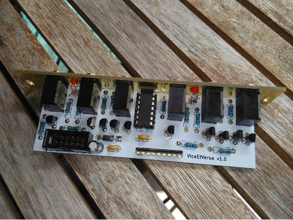

WaveLicker : ViceEtVersa (Modular Synth)
Dual Flip-Flop daisy chained if no jack plugged in 2nd entry.

- Comments(2)
x****mes
March 22, 2018, 07:18:22 pm
My customer lists open rates are between 80% and 100%. But again, you can't consider them normal marketing lists since they also expect update notices on the software they purchased. The more broad a list is, the lower the open rate. Very narrow niche lists usually get very high open rated. I quit doing broad email lists many years ago and concentrate on very narrow niche lists now. Depending on the niche, I get 30% to 80%+ open rates. narrow niche lists now. Depending on the niche, I get 30% to 80%+ open rates. narrow niche lists now. Depending on the niche, I get 30% to 80%+ open rates. narrow niche lists now. Depending on the niche, I get 30% to 80%+ open rates.
x****mes
March 22, 2018, 07:18:22 pm
My customer lists open rates are between 80% and 100%. But again, you can't consider them normal marketing lists since they also expect update notices on the software they purchased. The more broad a list is, the lower the open rate. Very narrow niche lists usually get very high open rated. I quit doing broad email lists many years ago and concentrate on very narrow niche lists now. Depending on the niche, I get 30% to 80%+ open rates. narrow niche lists now. Depending on the niche, I get 30% to 80%+ open rates. narrow niche lists now. Depending on the niche, I get 30% to 80%+ open rates. narrow niche lists now. Depending on the niche, I get 30% to 80%+ open rates.